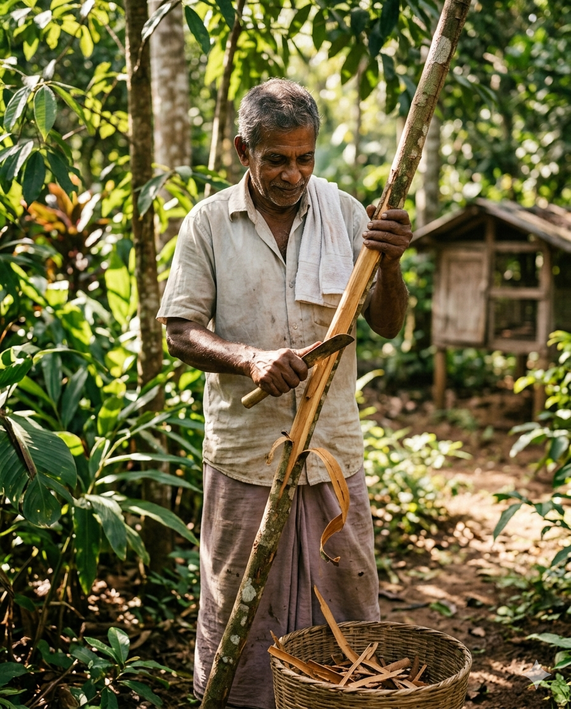

Hand-harvested in the misty hills of Sri Lanka, our cinnamon, spices, and tea
carry centuries of tradition in every fragrant strand. Sourced direct from
generational farmers — never blended, never compromised.
UNESCO Heritage · Protected GI
Scroll
Sri Lanka · Origin 100%

SinceGenerations
Our Story
A Crown Forged by Tradition
"True Cinnamon does not grow everywhere — it grows here, in the volcanic soils of Ceylon."
For centuries, the spice gardens of Sri Lanka have perfumed the world. Ceylon Crown
partners with small heritage farms across Matale, Kandy, and Nuwara Eliya — preserving
the slow craft of bark-rolling, sun-drying, and hand-grading that gives our spices and
teas their unmistakable character.
Every tin and pouch carries that heritage forward. Pure origin. Honest farmers.
A flavour the world has loved for a thousand years.